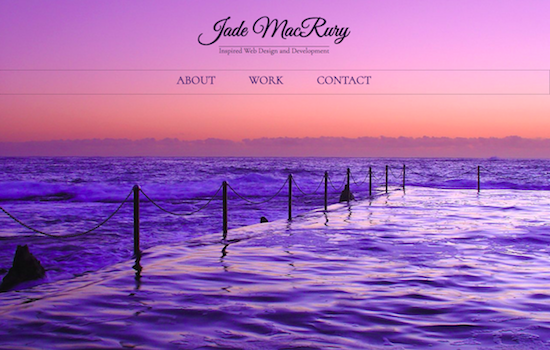

my portfolio

SkillCrush Project
HTML and CSS from Photoshop Design Comp
Part of the SkillCrush Break Into Tech Blueprint Phase 1 requirements, this involves the use of HTML and CSS in the creation of a static website based on a PSD file.

WordPress site
Customised WordPress theme
This is a website created for my first client and involves the use of a WordPress theme, with some of its HTML and CSS edited to fulfill client-specific requirements.
SkillCrush Project
HTML and CSS from Photoshop Design Comp
Part of the SkillCrush Break Into Tech Blueprint Phase 1 requirements, this involves the use of HTML and CSS in the creation of a static website based on a PSD file.

SkillCrush Project
HTML and CSS from Photoshop Design Comp
Part of the SkillCrush Break Into Tech Blueprint Phase 1 requirements, this involves the use of HTML and CSS in the creation of a static website based on a PSD file.

SkillCrush Project
HTML and CSS from Jubilee Austen Project
Part of the SkillCrush Break Into Tech Blueprint Phase 1 requirements, this involves the personalisation of the Jubilee Austen Project